Control flow options define the split, join and loop behavior around the activity. For details on the concept and use cases of control flow used in Stardust, refer to chapter Control Flow in the Concepts section.
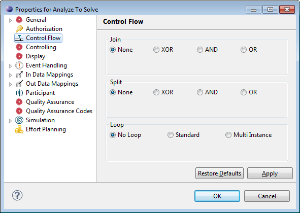
Figure: Control Flow Options
In the Stardust Eclipse Modeler, the control flow selected for an activity is represented as a diamond-shaped box, called gateway. The control flow behavior is visible via the icon inside a gateway, representing AND, XOR or OR split or join types. Find details and screenshots of specific gateways in the following sections.
In some cases you do not see the type of the gateway from the diagram alone, for example if a gateway is a split gateway of the preceding or the join gateway of the next activity. Then use the gateways tooltip. Move the mouse over the gateway to display the name of the activity and the type of control flow.
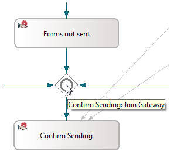
The Join behavior specifies the runtime behavior in case of multiple transitions from the predecessor activity leading to the chosen activity. The following options are offered:
If an activity is joined with the XOR option, one incoming transition is processed the chosen activity is instantiated. If multiple incoming transitions are processed at runtime the chosen activity is instantiated multiple times. XOR joins are displayed by an empty gateway sign.
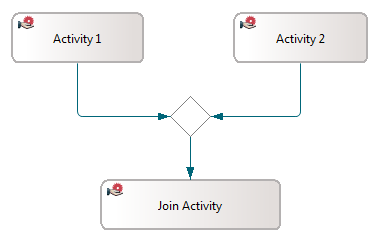
Figure: XOR Join Icon
If an activity is joined with the AND option, all incoming transitions are required to be processed for the execution of the activity. An AND-join is marked by a gateway sign with a plus icon in the middle.
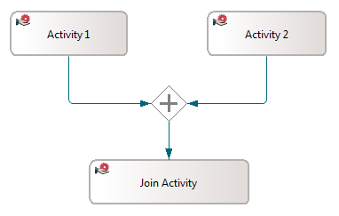
Figure: AND Join Icon
If an activity is joined with the OR option, it is waiting for all incoming transitions that are evaluated to true. OR joins are displayed as a gateway sign with a bold circle inside.
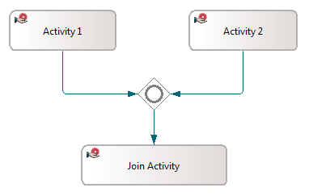
Figure: OR Join Icon
Apart from the property page settings you can change the join behavior of an activity in the diagram directly. Right-click the activity and select Join Behavior. Choose the desired join behavior for the activity.
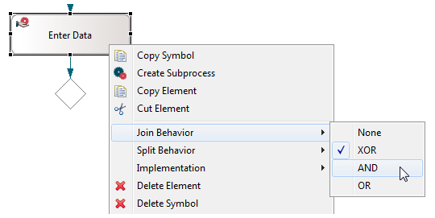
Figure: Changing the Join Behavior
The Split behavior specifies how multiple transitions to the following activities are to be executed. The following options are provided:
If an activity is split with the XOR option, only one of the multiple transitions to the following activities is executed. Only the first transition is instantiated that condition evaluates to true. XOR splits are marked by an empty gateway sign.
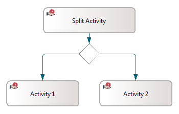
Figure: XOR Split Icon
If an activity is split with the AND option, all outgoing transitions to the following activities are executed.
Each transition is evaluated and followed if the evaluation results to true. An AND-split is marked by a gateway sign with a plus icon in the middle.
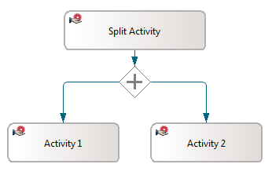
Figure: AND Split Icon
If an activity is split with the OR option, each of the multiple transitions to the following activities is executed and, in case it evaluates to true, instantiated. OR splits are marked by a gateway sign with a bold circle inside.
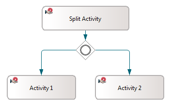
Figure: OR Split Icon
Refer to section Inclusive Gateway Usage Example of chapter Control Flow in the Concepts section for an example use case.
Apart from the property page settings you can change the split behavior of an activity in the diagram directly. Right-click the activity and select Split Behavior. Choose the desired split behavior for the activity.
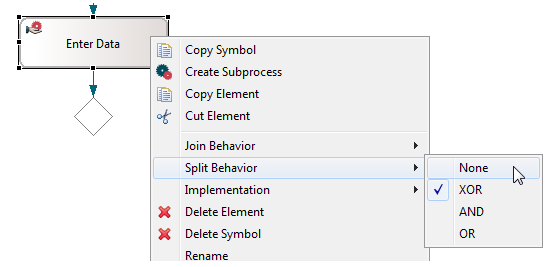
Figure: Changing the Split Behavior
The Loop behavior specifies how an activity is repeated until the loop condition is fulfilled. During the runtime execution of loop activity the specific part of the workflow is repeated.
When an activity enters the loop, one or more instances of the activity are created and performed. On termination of the activity instance, the loop condition is evaluated and based on the result a new activity instance is created. This is repeated until the loop gets terminated and then the subsequent activity is performed, if any.
The option No Loop indicates that the activity is performed exactly once regardless of the evaluation of the condition.
If the option Standard is selected as loop type, you can choose between a While or Repeat loop. In the Loop condition entry field, you can enter the condition. The syntax language supported in the loop condition is JavaScript as well as the former carnotEL language.
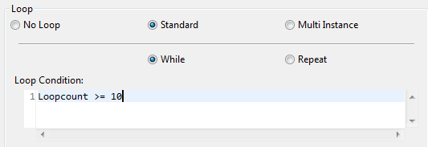
Currently, the single line format is supported only. The example in the following figure uses the While loop condition:
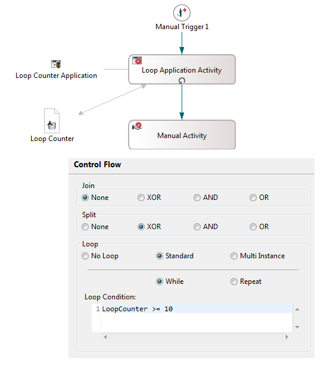
Figure:While Loop Condition
More elaborate cycles in the model should be modeled explicitly by cycles in the activity/transition graph. See figure below.
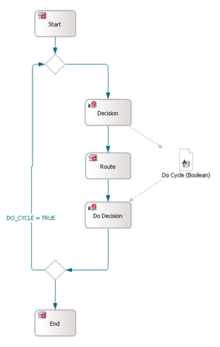
Figure: Transition in a Cycle
In this example transition conditions influence the process flow. Please refer to Specifying Transition Conditions.
The Multi Instance loop type specifies that the activity is a multiple instances activity. For details on the concept of multi instances activities as well as the supported activity, application and parameter types, refer to chapter Using Multiple Instance Activities of the Concepts handbook.
You can choose between Sequential
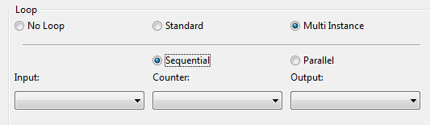
and Parallel processing.
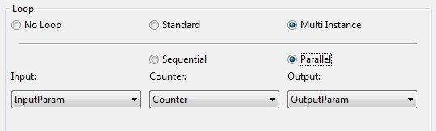
The following data parameter definitions to be used for the multi-instance processing can be set:
Note
Please use the sequential processing type with care. In some cases it might lead to uncompleted processes.
By default, during sequential execution, all instances are processed in one transaction. For large numbers of instances, this can lead to processing times exceeding the transaction timeout and hence in rollbacks of the transaction. In order to prevent this from happening, you can set a maximum batch size. This is especially helpful if the number of instances can vary strongly and very large numbers of instances (thousands and more) are possible.
If you specify a batch size, the transaction will be committed after processing the specified number of instances. New transactions will be started for batch-wise processing of the remaining instances thus limiting the transaction duration and preventing rollbacks. Please note however, that in case of exceptions, individual batches could roll back individually. In this case, a recovery will be required to restart processing for the remaining instances. Hence, batch processing is not advisable in situations where all instances are absolutely required to be processed within a short timeframe or where temporary states of partial processing would lead to major issues.
To configure the number of instances to process in one transaction, select the check box Limit Transaction Batch Size. The Maximum Batch Size entry field will be enabled containing the default value 1. Enter a batch size, which should be an integer value specifying the concrete limit.
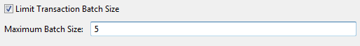
Figure: Limiting the Transaction Batch Size
Note that if the activity is an interactive activity, setting the batch size has no effect,
since the inherent implementations of the interactive activities are causing a transaction
commit after each activity create or suspend action, thus interactive multi-instance
activities are always behaving as if the batch size is set to 1.
The three most common examples for batch size settings are the following:
x: for very large lists to avoid transaction timeouts1: to commit every iteration, e.g. for subprocesses to only roll back
the last subprocess in case of an error and not affect the previous iterationsThe following example uses a multiple instance loop type in a subprocess activity. Formal in and output parameters of the process interface are used to pass each element of a String list.
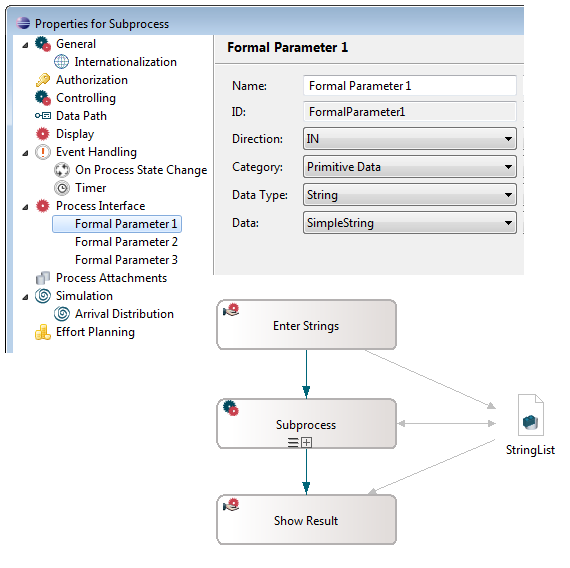
Figure: Multi Instance Loop Example
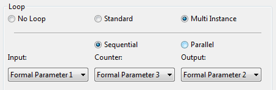
Figure: Multi Instance Loop Parameters